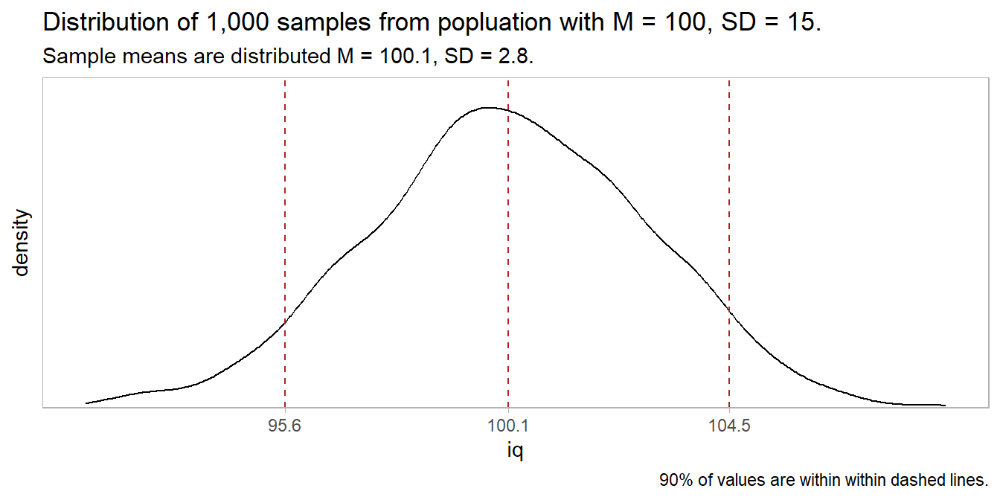
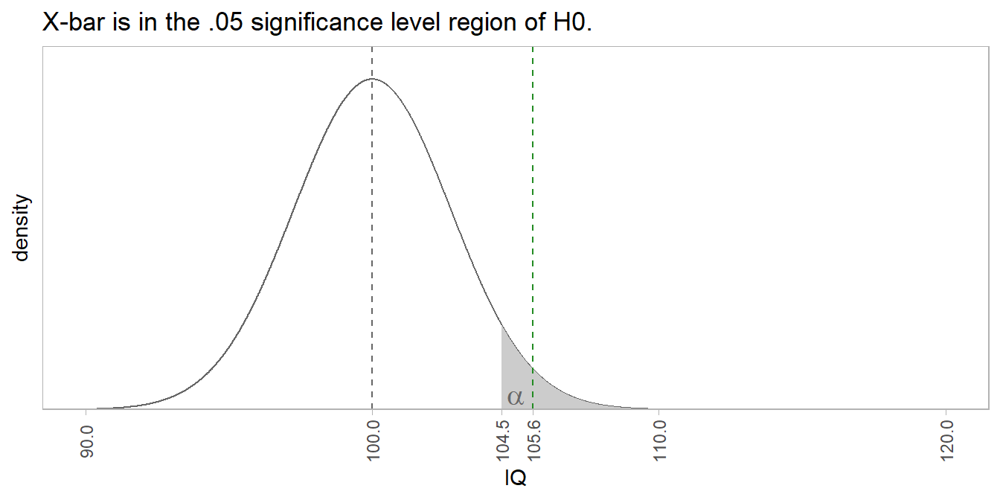
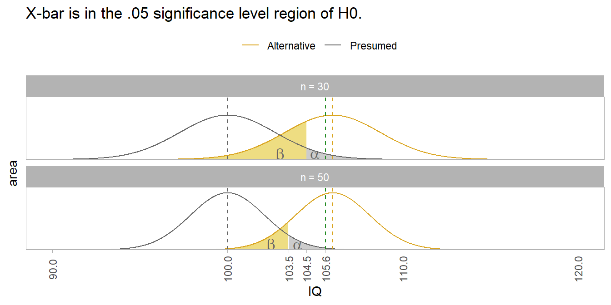
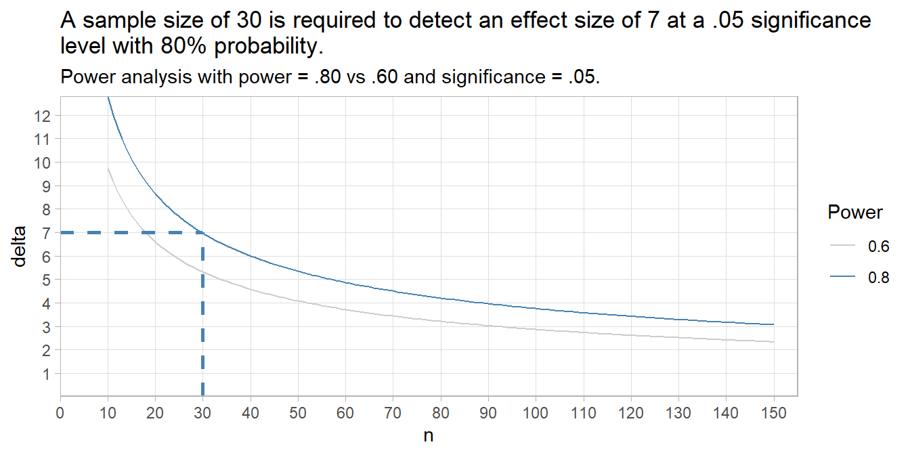
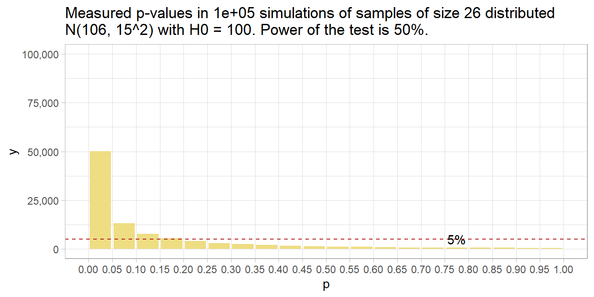
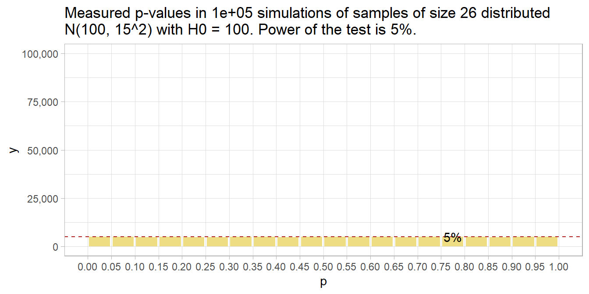
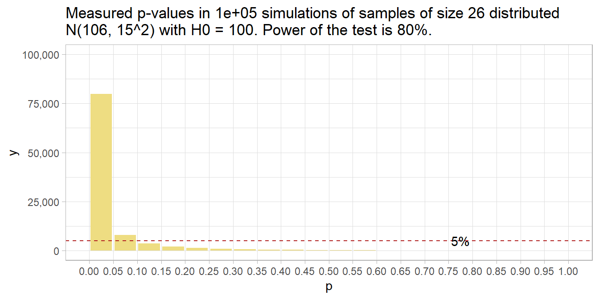

1.2 Hypothesis Testing
P-values express how surprising a summary measure is given the null hypothesis (H0). Suppose you hypothesize that IQs have increased from the intended mean of \(\mu\) = 100, \(\sigma\) = 15. H0 is \(\mu_0\) = 100 with alternative H1 that \(\mu\) > 100. Suppose also that you are right: \(\mu\) is actually 106.
set.seed(123456)
mu_0 <- 100
sigma <- 15
mu <- 106
# Create a population of size N with values plucked from normal dist centered at
# mu_0 and mu.
N <- 1E6 # a big number
pop_100 <- data.frame(person = seq(1, N), iq = rnorm(N, mu_0, sigma))
pop_106 <- data.frame(person = seq(1, N), iq = rnorm(N, mu, sigma))The presumed distribution of IQs might look like this.

Take a random sample of n = 30 IQs from the population.
n <- 30
x <- sample(pop_106$iq, n)
(x_bar <- mean(x)) %>% scales::comma(.1)
## [1] "105.6"
(s <- sd(x)) %>% scales::comma(.1)
## [1] "15.2"The sample has \(\bar{x}\) = 105.6, SD = 15.2. How surprising is this if H0 is true? I.e., what is the probability of observing 105.6 when \(\mu\) is 100? According to the Central Limit Theorem (CLM), repeated samples of size n from a large population will yield \(\bar{x}\) values that approach a normal distribution centered at \(\mu\) with a standard deviation equal to the the standard error, \(SE = \frac{\sigma}{\sqrt{n}}\) where \(\sigma\) is the population SD. In this example, n = 30, so SE = \(15/\sqrt{30}\) = 2.7 and repeated samples would be expected to be distributed \(\sim N(100.0, 2.7^2).\) You can verify this empirically with a simulation.

But you measured \(\bar{x}\) = 105.6. The probability of measuring a value \(z = \frac{\bar{x} - \mu_0}{\sigma / \sqrt{n}} = \frac{105.6 - 100}{2.7}\) >= 2.0 standard errors greater than 100 is 0.020. A common threshold probability is \(\alpha\) = .05 level of significance. A sample of 30 from a population with \(\mu\) = 100 that has a mean greater than qnorm(.05, 100, 15 / sqrt(30), lower.tail = FALSE) = 104.5 would occur with less than 5% probability.
z <- (x_bar - mu_0) / (sigma / sqrt(n))
critical_value <- qnorm(.95, mu_0, sigma / sqrt(n))
The sampling mean is \(\bar{x}\) = 105.6, well into the \(\alpha\) <= .05 shaded region. The probability of measuring a mean IQ of 105.6 from a sample of size n = 30 when the population mean is 100 is p = 0.020, meaning only 2.0% of the area under the distribution is to the right of 105.6. Using an \(\alpha\) = .05 level of significance, reject H0. This is a true positive because the population mean is 106, not 100. Imagine a stricter level of significance, shrinking the shaded region right of 105.6. You would mistakenly fail to reject H0, a false negative (Type II error). The \(\beta\) blue-shaded region is Type II error probability. Any measured mean in this region would be greater than \(mu_0\) = 100, yet not be rejected by the statistical test.
Type I and II Errors
Either H0 or H1 is correct, and you must choose to either reject or not reject H0. That means there are four possible states at the end of your analysis. If your summary measure is extreme enough for you to declare a “positive” result and reject H0, you are either correct (true positive) or incorrect (false positive). False positives are called Type I errors. Alternatively, if it is not extreme enough, you are either correct (true negative) or incorrect (false negative). False negatives are called Type II errors.
The probabilities of landing in these four states depend on your chosen significance level, \(\alpha\), and on the statistical power of the study, 1 - \(\beta\).
| H0 True | H1 True | |
|---|---|---|
| Significance test is positive, so you reject H0. | False Positive Type I Error Probability = \(\alpha\) |
True Positive Good Call! Probability = 1 - \(\beta\) |
| Significance test is negative, so you do not reject H0. | True Negative Good Call! Probability = (\(1 - \alpha\)) |
False Negative Type II Error Probability = \(\beta\) |
\(\alpha\) is the expected Type I error rate - extreme summary measures occurring by chance. \(\beta\) is the expected Type II error rate - summary measures that by chance were not extreme enough to reject H0. In the IQ example, if the population mean was \(\mu\) = 100, any sample mean greater than qnorm(.95, 100, 15/sqrt(n)) = 104.5 would be mistakenly rejected at the \(\alpha\) = .05 significance level, a false positive. If the population mean was \(\mu\) = 106, any sample mean less than 104.5 would be mistakenly not rejected, a false negative.
The plot below shows how the sampling distributions of the null hypothesis and a potentially different true population overlap to create the four zones. The first facet uses a sample size of n = 30. The second uses n = 50, resulting in tighter distributions.
If the presumed (H0) population value is accurate, then your risk is in accidentally rejecting H0. Any sample mean in the \(\alpha\) region would incorrectly reject H0 (Type I).
If the presumed (H0) population value is wrong, and the true value is actually the (unknown) gold color population to the right, then your risk is in failing to reject H0. Any sample mean in the \(\beta\) region would incorrectly fail to reject H0 (Type II).

You don’t see much discussion of \(\beta\) is reports because \(\beta\) is an unknown value based on the true population whose center you do not know. \(\beta\) is relevant at the design stage where it informs how large your sample size needs to be in order to reject H0. In this example, \(\mu\) is 6 points larger than \(\mu_0\). With a sample size of n = 30, the sample mean needs to be at least 104.5 for you to reject H0 at the \(\alpha\) = .05 level. If you want to reject H0 with a smaller difference, you need a larger sample size. A sample size of n = 50 lets you reject H0 with a sample mean of only 103.5. Interestingly, you can see how there can be such a thing as too much power. If n is large enough, you can reject H0 with a sample mean that is only trivially larger than the presumed value.
Statistical Power
The ability to detect a difference when it exists (the true positive) is called the power of the test. Its measured by the area outside of \(\beta\). Changing n from 30 to 50 reduced the area in the \(\beta\) region, and therefore increased the power of the test.
Statistical power is an increasing function of sample size, effect size, and significance level. The positive association with significance level means there is a trade-off between Type I and Type II error rates. A small \(\alpha\) sets a high bar for rejecting H0, but you run the risk of failing to appreciate a real difference. On the other hand, a large \(\alpha\) sets a low bar for rejecting H0, but you run the risk of mistaking a random difference as real.
The 1 - \(\beta\) statistical power threshold is usually set at .80, similar to the \(\alpha\) = .05 level of significance threshold convention. Given a real effect, a study with a statistical power of .80 will only find a positive test result 80% of the time. You may think more power is better, but beware that with a large enough sample size, even trivial effect sizes may yield a positive test result. You need to consider both sides of this coin.
A power analysis is frequently used to determine the sample size required to detect a threshold effect size given an \(\alpha\) level of significance. A power analysis expresses the relationship among four components. If you know any three, it tells you the fourth: The components are i) 1 - \(\beta\), ii) n, iii) \(\alpha\), and iv) expected effect size, Cohen’s d = \((\bar{x} - \mu_0)/\sigma\).
Suppose you set power at .80, significance level at .05, and n = 30. What effect size will this design detect?
(pwr <- pwr::pwr.t.test(
n = 30,
sig.level = .05,
power = 0.80,
type = "one.sample",
alternative = "greater"
))
##
## One-sample t test power calculation
##
## n = 30
## d = 0.464949
## sig.level = 0.05
## power = 0.8
## alternative = greaterAn effect size of d = 0.465 will fall in the \(\alpha\) = .05 region with probability 1 - \(\beta\) = .80 if the sample size is n = 30. Multiply d = 0.465 by \(\sigma\) = 15 to convert to the IQ units, 7.0. More likely, you will use the power test to detect the required sample size. Suppose you set \(1 - \beta\) = .8 and \(\alpha = .05\), and want to detect an effect size of \(5 / 15\).
(pwr <- pwr::pwr.t.test(
d = 5 / 15,
sig.level = .05,
power = 0.80,
type = "one.sample",
alternative = "greater"
))
##
## One-sample t test power calculation
##
## n = 57.02048
## d = 0.3333333
## sig.level = 0.05
## power = 0.8
## alternative = greaterYou need a larger sample, n = 58. You can use the power test formula for various n sizes to see the relationship with effect size. Note: the y-axis multiplies Cohen’s d by \(\sigma\) to get the effect size in original units.
## Warning: Using `size` aesthetic for lines was deprecated in ggplot2
## 3.4.0.
## ℹ Please use `linewidth` instead.
## This warning is displayed once every 8 hours.
## Call `lifecycle::last_lifecycle_warnings()` to see where this
## warning was generated.
The dashed lines show a sample size of 30 is required to detect an effect size of 7 at a .05 significance level with 80% probability.
What p-values would you expect?
What distribution of p-values would you expect if there is a true effect and you repeated the study many times? What if there is no true effect? The answer is completely determined by the statistical power of the study.1
To see this, run 100,000 simulations of an experiment measuring the average IQ from a sample of size n = 26. The samples will be 26 random values from the normal distribution centered at 106 with a standard deviation of 15. H0 is \(\mu\) = 100.
# 100,000 random samples of IQ simulations from a normal distribution where
# sigma = 15. True population value is 100, but we'll try other values.
n_sims <- 1E5
mu <- 100
sigma <- 15
run_sim <- function(mu_0 = 106, n = 26) {
data.frame(i = 1:n_sims) %>%
mutate(
x = map(i, ~ rnorm(n = n, mean = mu_0, sd = sigma)),
z = map(x, ~ t.test(., mu = mu)),
p = map_dbl(z, ~ .x$p.value),
x_bar = map_dbl(x, mean)
) %>%
select(x_bar, p)
}The null hypothesis is that the average IQ is 100. Our rigged simulation finds an average IQ of 106 - an effect size of 6.
sim_106_26 <- run_sim(mu_0 = 106, n = 26)
glimpse(sim_106_26)
## Rows: 100,000
## Columns: 2
## $ x_bar <dbl> 104.0366, 107.4146, 106.3826, 101.9452, 104.9108, 106.0985, 109.…
## $ p <dbl> 0.1764747839, 0.0345864346, 0.0419669200, 0.4522238256, 0.065089…
mean(sim_106_26$x_bar)
## [1] 106.0062The statistical power achieved by the simulations is 50%. That is, the typical simulation detected the effect size of 6 at the .05 significance level about 50% of the time.
pwr.t.test(
n = 26,
d = (106 - 100) / 15,
sig.level = .05,
type = "one.sample",
alternative = "two.sided"
)##
## One-sample t test power calculation
##
## n = 26
## d = 0.4
## sig.level = 0.05
## power = 0.5004646
## alternative = two.sidedThat means that given a population with an average IQ of 106, a two-sided hypothesis test of H0: \(\mu\) = 100 from a sample of size 26 will measure an \(\bar{x}\) with a p-value under .05 only 50% of the time. You can see that in this histogram of p-values.
sim_106_26 %>% plot_sim()
Had there been no effect to observe, you’d expect all p-values to be equally likely, so the 20 bins would all have been 5% of the number of simulations – i.e., uniformly distributed under the null. This is called “0 power”, although 5% of the p-values will still be significant at the .05 level. The 5% of p-values < .05 is the Type II error rate - that probability of a positive test result when there is no actual effect to observe.
run_sim(mu_0 = 100, n = 26) %>%
plot_sim(mu_0 = 100)
If you want a higher powered study that would detect the effect at least 80% of the time (the normal standard), you’ll need a higher sample size. How high? Conduct the power analysis again, but specify the power while leaving out the sample size.
pwr.t.test(
power = 0.80,
d = (106 - 100) / 15,
sig.level = .05,
type = "one.sample",
alternative = "two.sided"
)##
## One-sample t test power calculation
##
## n = 51.00945
## d = 0.4
## sig.level = 0.05
## power = 0.8
## alternative = two.sidedYou need 51 people (technically, you might want to round up to 52). Here’s what that looks like. 80% of p-values are below .05 now.
run_sim(mu_0 = 106, n = 51) %>%
plot_sim(mu_0 = 106)
So far, we’ve discovered that when there is an effect, the probability that the measure p-value is under the \(\alpha\) significance level equals the power of the study, 1 - \(\beta\) - the true positive rate, and \(\beta\) will be above the \(\alpha\) level - the false negative rate. We’ve also discovered that when there is no effect, all p-values are equally likely, so \(\alpha\) of them will be below the \(alpha\) level of significance - the false positive rate, and 1 - \(\alpha\) will be above \(\alpha\) - the true negative rate.
It’s not the case that all p-values below 0.05 are support for the alternative hypothesis. If the statistical power is high enough, a p-value just under .05 can be even less likely under the null hypothesis.
run_sim(mu_0 = 108, n = 51) %>%
mutate(bin = case_when(p < .01 ~ "0.00 - 0.01",
p < .02 ~ "0.01 - 0.02",
p < .03 ~ "0.02 - 0.03",
p < .04 ~ "0.03 - 0.04",
p < .05 ~ "0.04 - 0.05",
TRUE ~ "other")
) %>%
janitor::tabyl(bin)## bin n percent
## 0.00 - 0.01 86618 0.86618
## 0.01 - 0.02 5011 0.05011
## 0.02 - 0.03 2353 0.02353
## 0.03 - 0.04 1353 0.01353
## 0.04 - 0.05 887 0.00887
## other 3778 0.03778(Recall that under H0, all p-values are equally likely, so each of the percentile bins would contain 1% of p-values.)
In fact, at best, a p-value between .04 and .05 can only be about four times as likely under the alternative hypothesis as the null hypothesis. If your p-value is just under .05, it is at best weak support for the alternative hypothesis.
1.2.1 Further Reading
Pritha Bhandari has two nice posts on Type I and Type II errors and Statistical Power. Daniel Lakens’s Coursera class Improving your statistical inferences has a great p-value simulation exercise in Week 1 (assignment)
This section is based on ideas I learned from homework assignment 1 in Daniel Lakens’s Coursera class Improving your statistical inferences.↩︎